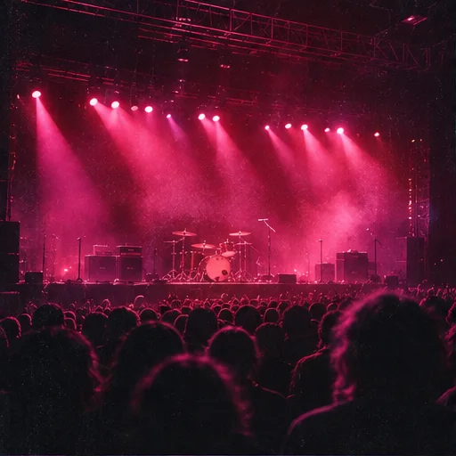
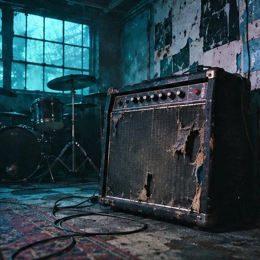
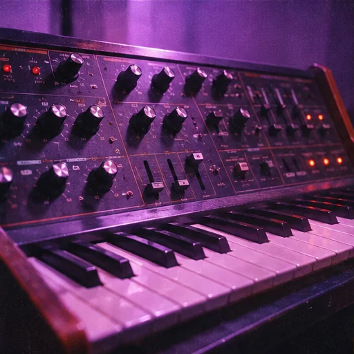
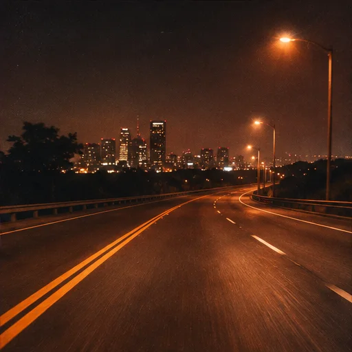
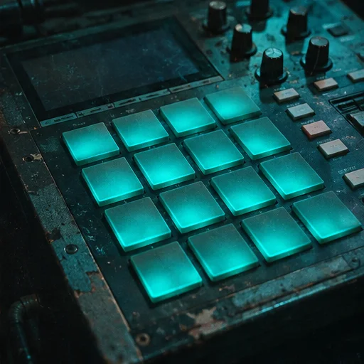
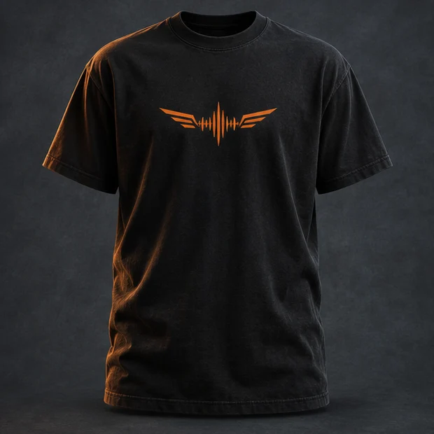
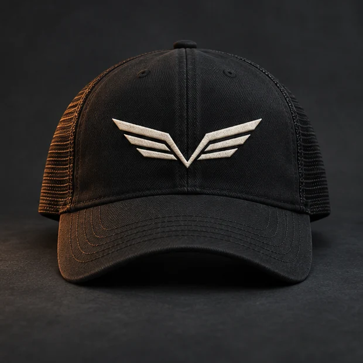
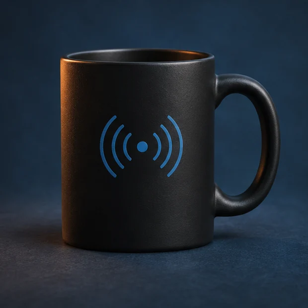
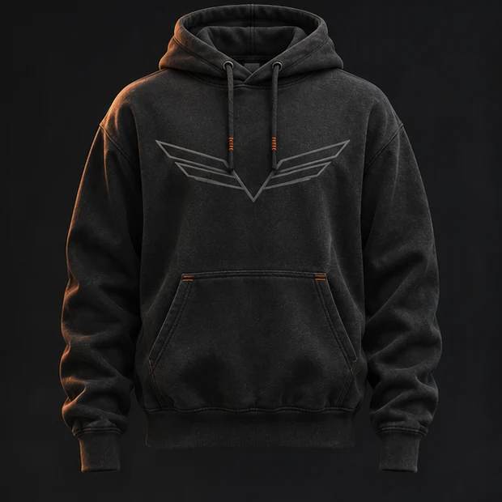

80s Arena Rock
Huge choruses, polished guitars, neon stages and highway anthems.
Open the 80s playlistIndependent rock radio project
Big choruses, heavy riffs and records worth playing all the way through. With Jack Rodríguez and Kevin Cusnir.
Turn Up. Take Flight.
Spotify
Playback comes from the official Spotify player. Jetstream89’s own live stream is still in development.
Programming preview
Explore the proposed lineup in station time or your own time zone.
Open program guide →Start with a playlist or follow the story behind a sound.

Huge choruses, polished guitars, neon stages and highway anthems.
Open the 80s playlist
Grunge, alternative metal, industrial edges and post-grunge gravity.
Open the 90s playlistHeavy, power, classic, melodic and selected extreme-metal turbulence.
Explore heavy metal
Concept albums, suites, odd meters and patient musical exploration.
Explore progressive rock
Power ballads, melodic rock, late-night requests and softer landings.
See the late-night show
Synth-pop, electronic, industrial, rap, hip-hop and genre collisions.
Explore genre crossoversA short original browser-synth ident. It uses no copyrighted recording and never starts without your click.
Two hosts, two perspectives and one human-curated signal.
Host · Classic Rock & Community
Jack Rodríguez brings classic-rock instinct, guest relationships, interviews and the energy of The Rock Drive. His public Spotify profile is the starting point for future editorial playlist research.
Host · Technology & Music Discovery
Kevin Cusnir shapes Jetstream89's product, visual identity, bilingual experience and Nova Music Lab. His route crosses rock, metal, progressive music, technology, data and musical storytelling.
A privacy-friendly local prototype inspired by Spotify + Last.fm profile research.
Choose the routes that represent you. The profile stays only in this browser.
Merch Lab
Your interest list stays on this browser. There is no checkout, stock or payment collection.

Heavy black cotton with a small orange wing mark.
Concept · coming later
A black cap with an off-white wing patch.
Concept · coming later
A matte ceramic mug with the night-shift wave mark.
Concept · coming later
Charcoal fleece with a subtle wing design.
Concept · coming laterOne local vote per browser. Titles are fictional until the station has a licensed public chart.
The form validates and stores a draft in your browser. It does not promise playback or send data to a public queue.
Language, motion, contrast, density and local station preferences live in your browser.